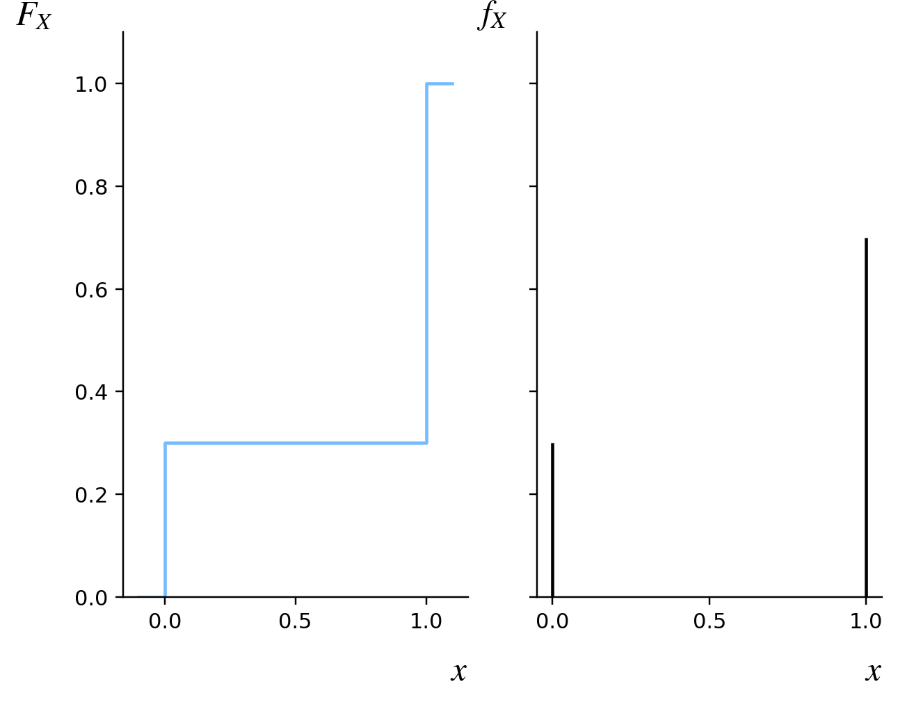

13.1. La distribuzione di Bernoulli#
Si usa generalmente il termine esperimento di Bernoulli per indicare un esperimento casuale ha due soli possibili esiti, che vengono convenzionalmente indicati come «successo» e «fallimento», così che lo spazio degli eventi risulta essere \(\Omega = \{ \text{fallimento}, \text{successo} \}\).
Example 13.1
Le denominazioni «successo» e «fallimento» non hanno generalmente le connotazioni positive e negative che diamo loro nel linguaggio comune, ma come etichette usate per rappresentare in modo astratto i due esiti dell'esperimento in questione. Se l'esecuzione dell'esperimento consiste nel selezionare secondo qualche criterio non deterministico un fumetto all'interno di una pila, il successo potrebbe essere associato all'estrazione di un volume
con una pagina strappata,
che contiene almeno una storia della nostra supereroina preferita,
in cui c'è almeno una vignetta con un personaggio che indossa un cappotto blu.
In linea generale, queste tre situazioni vengono valutate rispettivamente in modo negativo, positivo e neutro, ma in tutti i casi ci stiamo riferendo al successo in un esperimento di Bernoulli. Vale la pena sottolineare che in modo del tutto analogo potremmo pensare a esperimenti di Bernoulli, un un certo senso duali rispetto a quelli sopra indicati, nei quali i medesimi avvenimenti identificano il fallimento.
Dato un generico esperimento di Bernoulli, sia \(p \in [0, 1]\) la probabilità di ottenere un successo come esito. La variabile aleatoria \(X: \Omega \to \{ 0, 1 \}\) definita in modo tale che
segue una distribuzione detta di Bernoulli, parametrizzata rispetto alla probabilità di successo \(p\) e il cui supporto è l'insieme \(\{ 0, 1 \}\). Chiaramente, gli eventi \(X =0\) e \(X = 1\) avranno rispettivamente probabilità uguali a \(1 - p\) e \(p\), da cui segue la prossima definizione.
Definition 13.1 (La famiglia di Bernoulli)
Dato \(p \in [0, 1]\), la distribuzione di Bernoulli di parametro \(p\) è definita dalla funzione di massa di probabilità
o, equivalentemente, dalla funzione di ripartizione
Scriveremo \(X \sim \mathrm B(p)\) per indicare che la variabile aleatoria \(X\) segue una distribuzione di Bernoulli di parametro \(p\). L'insieme di tutte le distribuzioni di Bernoulli al variare dei possibili valori per il relativo parametro viene detta famiglia delle distribuzioni di Bernoulli.
Chiaramente, la visualizzazione di questo tipo di funzione di massa di probabilità consiste nel mostrare due bastoncini aventi ascisse nulla e unitaria e altezza uguale a \(1-p\) e \(p\), mentre la funzione di ripartizione avrà un grafico costante a tratti, con due salti posizionati nelle stesse ascisse: il primo cambierà l'ordinata da \(0\) a \(1 - p\) e il secondo la modificherà da quest'ultimo valore a \(1\), come evidenziato nel grafico prodotto dalla seguente cella nascosta, nel quale la spezzata blu mostra il grafico della funzione di ripartizione e il grafico a bastoncini indica la funzione di massa di probabilità. Nella versione interattiva del libro è anche possibile modificare il valore del parametro \(p\) agendo sul relativo selettore e vedere come cambiano i due grafici.
Show code cell source
import ipywidgets as widgets
import matplotlib.pyplot as plt
import numpy as np
from scipy import stats as st
param_slider = widgets.FloatSlider(value=0.75,
min=0,
max=1,
step=0.01,
description='p',
continuous_update=True,
readout=False,
orientation='horizontal')
def bernoulli_pdf_cdf(p):
B = st.bernoulli(p)
plt.hlines([0, B.pmf(0), 1], [-1, 0, 1], [0, 1, 2])
plt.vlines([0, 1], 0, [B.pmf(0), B.pmf(1)], color='k')
plt.plot([0, 1], [B.pmf(0), B.pmf(1)], 'o')
plt.title(rf'$p = {p:.2f}$')
plt.show()
widgets.interactive(bernoulli_pdf_cdf, p = param_slider)

Fig. 13.1 Ritratto di Jakob Bernoulli (immagine di pubblico dominio, disponibile su wikimedia).#
Nomenclatura
Questa distribuzione deve il suo nome allo scienziato svizzero Jakob Bernoulli (ritratto nella Figura 13.1, e da non confondere con il figlio Daniel, anch'esso noto matematico), che la introduce nel suo libro «Ars Conjectandi», considerato una tra le prime opere che trattano della teoria delle probabilità. Nella terminologia comune, e in alcuni casi anche in fonti scritte in lingua italiana, è abbastanza comune rimpiazzare la dicitura "di Bernoulli" con l'aggettivo bernoulliano, o perfino bernulliano (in alcuni casi con iniziale maiuscola) quando si vuole definire un esperimento di questo tipo o le distribuzioni e variabili aleatorie ad esso collegate. Dunque è possibile imbattersi nelle diciture «esperimento bernoulliano», «distribuzione Bernoulliana», «variabile aleatoria bernoulliana» e così via.
Il fatto che siano presenti due sole specificazioni permette di ottenere agevolmente il valore atteso e la varianza della distribuzione calcolando estensivamente le sommatorie alla base dei corrispondenti valori attesi. Infatti, data una variabile aleatoria \(X \sim \mathrm B(p)\),
D'altra parte, \(X^2 = X\) perché elevare \(0\) oppure \(1\) al quadrato non ne cambia il valore, e quindi \(\mathbb E(X^2) = \mathbb E(X) = p\), il che implica \(\mathrm{Var}(X) = \mathbb E(X^2) - \mathbb E(X)^2 = p - p^2 = p (1 - p)\).
La distribuzione di Bernoulli è decisamente semplice da trattare, essendo la relativa algebra formata dai soli quattro eventi
che hanno rispettivamente probabilità \(0\), \(1-p\), \(p\) e \(1\). Normalmente, la parte più impegnativa legata al calcolo delle probabilità di questi eventi consiste nel determinare correttamente il valore del parametro \(p\) partendo dalla descrizione dell'esperimento di Bernoulli dal quale si parte. In alcuni casi la probabilità di successo si determina in modo elementare, mentre in altri è necessario ricorrere alle tecniche di combinatorica che abbiamo visto nel Capitolo 9.
Example 13.2
Uno scatolone contiene 50 albi di fumetti, in dodici dei quali compare una e una sola storia con Aquaman come protagonista, mentre nei restanti albi Aquaman non compare mai. Scelgo a caso due albi dallo scatolone e indico con \(X\) la variabile aleatoria che assume il valore \(1\) quando negli albi che ho pescato posso leggere due storie diverse di Aquaman, e che vale \(0\) in tutti gli altri casi. Chiaramente \(X\) segue una distribuzione di Bernoulli, e il suo parametro è uguale alla probabilità \(p\) che selezionando due albi dai 50 a disposizione, entrambi facciano parte del gruppo di dodici che parlano di Aquaman. A sua volta, \(p\) è uguale al rapporto tra il numero di combinazioni di dodici oggetti in due posti (il numero di casi favorevoli) e il numero di combinazioni di cinquanta oggetti in due posti (il numero di casi possibili), pertanto
e dunque \(X \sim \mathrm B(0.054)\). Pertanto
la probabilità di non pescare albi con due storie di Aquaman differenti è \(\mathbb P(X = 0) = 0.946\), e
\(\mathbb E(X) = 0.054\), il che significa che mediamente possiamo aspettarci che in poco più di cinque volte su cento selezioni casuali di due albi si arrivi a pescarne due con due storie diverse di Aquaman.
Se sapessimo che sei delle dodici copie in questione sono dei doppioni tutti identici tra loro, ci troveremmo di fronte a una variabile aleatoria \(X'\) che segue ancora distribuzione di Bernoulli, ma in questo il calcolo del relativo parametro richiede un po' più di perizia. In particolare, quello che si complica è il calcolo del numero di casi favorevoli. Per ottenerlo possiamo seguire, per esempio, uno dei due seguenti ragionamenti:
il numero di modi di scegliere due albi dai dodici a disposizione è \(\binom{12}{2} = 66\), ma \(\binom{6}{2} = 15\) di questi corrispondono a coppie che contengono due albi uguali, dunque il numero di coppie con albi distinti è \(66 - 15 = 51\);
ci sono \(\binom{6}{2} = 15\) modi di comporre una coppia considerando solo gli albi di cui possediamo un'unica copia, e a questi bisogna aggiungere \(6 \cdot 6 = 36\), che corrisponde al numero di possibili coppie che contengono uno dei doppioni e un altro albo; il risultato è, anche in questo caso, \(51\).
La probabilità \(p'\) di estrarre due albi con due storie diverse di Aquaman in è quindi
Riassumendo, \(X' \sim \mathrm B(0.042)\), il che significa ad esempio che la media del numero di volte in cui si arriva a leggere due storie diverse di Aquaman scende a poco più di quattro volte su cento.
13.1.1. Momenti della distribuzione di Bernoulli (*)#
La funzione generatrice dei momenti per una distribuzione di Bernoulli si ottiene facilmente, assumendo questa distribuzione solamente due specificazioni. Infatti, dati \(p \in [0, 1]\) e \(X \sim \mathrm B(p)\),
Pertanto il momento primo della distribuzione è
che coincide con il valore atteso che abbiamo già calcolato. Per quanto riguarda invece i momenti centrali, poniamo \(Y \coloneqq X - p\) e calcoliamo
così che il momento centrale \(n\)-esimo sarà uguale a
Dunque possiamo concludere che per una distribuzione di Bernoulli di parametro p
la varianza è \(p (1 - p)\), come già calcolato;
il momento centrale terzo è \(\mu_3 =p(1 - p)(1 - 2p)\), così che la skewness vale
\[\frac{\mu_3}{\sigma^3} = \frac{p(1 - p)(1 - 2p)}{(p(1 - p))^{2/3}} = \frac{1 - 2p}{\sqrt{p(1 - p)}}\]e la distribuzione è asimmetrica verso sinistra, simmetrica e asimmetrica verso destra rispettivamente a seconda del fatto che \(p\) sia minore di, uguale a oppure maggiore di \(\frac{1}{2}\);
il momento centrale quarto è uguale a \(\mu_4 = p(1 - p)(1 - p - p^2)\) e pertanto la curtosi sarà
\[\frac{\mu_4}{\sigma^4} - 3 = \frac{(1 - p - p^2)}{p(1 - p)} - 3 = \frac{(1 - 2p)^2}{p(1 - p)} \enspace.\]
Questo ultimo punto merita una riflessione più approfondita: la curtosi è sempre positiva quando \(p \neq \frac{1}{2}\); di conseguenza, la distribuzione è quasi sempre leptocurtica, nel senso che tende a produrre più valori fuori scala se confrontata con una distribuzione normale di ugual valore atteso e deviazione standard. In questi casi, inoltre, il valore della curtosi aumenta sempre di più man mano che il parametro si avvicina a uno dei suoi due valori estremi, \(0\) oppure \(1\): come è ragionevole aspettarsi, d'altronde, più \(p\) è vicino questi valori e più la distribuzione tenderà ad assumere una sola delle sue due specificazioni, diventando quindi più propensa a generare valori fuori scala. La curtosi è invece nulla quando \(p = \frac{1}{2}\), e anche in questo caso si tratta di un risultato abbastanza scontato, essendo equiprobabili le specificazioni della distribuzione.
13.1.2. Quantili della distribuzione di Bernoulli (*)#
La distribuzione di Bernoulli ha solo due specificazioni, e di conseguenza la sua funzione di ripartizione assume solo tre valori, e ciò ha un notevole impatto sui quantili della distribuzione stessa. Più precisamente, dati \(p \in (0, 1)\) e \(X \sim \mathrm B(p)\), \(F_X\) vale \(0\) se il suo argomento è negativo, \(1 - p\) quando l'argomento è compreso tra \(0\) (incluso) e \(1\) (escluso) e \(1\) nei casi rimanenti. Pertanto, per ogni \(q \in [1-p, 1)\) si ha
mentre \(F_X(1) = 1 > q\). Dunque \(x_q = 0\), essendo \(0\) la più grande specificazione \(x\) di \(X\) (l'unica, peraltro) tale che \(F_X(x) \leq q\). Analogamente, dal fatto che \(F_X(1) \leq 1\) e che non ci sono specificazioni maggiori di \(1\) consegue che \(x_1 = 1\). Se invece consideriamo un generico livello \(q \in [0, 1-p)\), nessuna specificazione \(x\) è tale che \(F_X(x) \leq q\), il che implica che non esiste il relativo quantile per la distribuzione di Bernoulli.
Quando \(p=1\), una variabile aleatoria \(X \sim B(p)\) degenera nella costante \(1\) e dunque esiste solamente il quantile \(x_1 = 1\). Analogamente, quando \(p=0\) l'unico quantile esistente è \(x_1 = 0\).
13.1.3. Implementazione della distribuzione di Bernoulli (*)#
Il modulo scipy.stats contiene una serie di classi che implementano un gran
numero di famiglie di distribuzioni, e in particolare quasi tutte quelle che
sono descritte in questo libro. Più precisamente, sulle istanze di queste
classi è possibile invocare metodi che permettono di calcolare automaticamente
gli indici e le funzioni che abbiamo studiato. Il punto di partenza per
ottenere tali istanze consiste nell'invocare una funzione specifica per ogni
famiglia di distribuzioni, che si occupa di creare le istanze e di
restituirle. Questa funzione ha un nome che ricorda quello della famiglia a
cui essa fa riferimento, e per quanto riguarda le distribuzioni discrete
essa accetta un argomento per ogni valore dei parametri coinvolti.
Per quanto riguarda le distribuzioni di Bernoulli, questa funzione si chiama
(banalmente) bernoulli, e la cella che segue mostra come ottenere le
corrispondenti istanze.
import scipy.stats as st
X = st.bernoulli(0.7)
Una volta istanziata una distribuzione discreta, i metodi pmf e cdf
permettono di calcolarne le funzioni di massa di probabilità e di
ripartizione.
p=0.7
fig, axes = plt.subplots(1, 2, sharey=True)
B = st.bernoulli(p)
x = np.arange(-0.1, 1.1, 0.01)
axes[0].step(x, B.cdf(x))
axes[1].vlines(B.support(), 0, B.pmf(B.support()), color='k')
for ax in axes:
ax.set_ylim(0, 1.1)
ax.set_xticks([0, 0.5, 1])
ax.set_xlabel(r'$x$')
axes[0].set_ylabel(r'$F_X$', rotation='horizontal')
axes[1].set_ylabel(r'$f_X$', rotation='horizontal')
plt.show()

Analogamente, i metodi mean, median, var e std permettono di calcolare
valore atteso, mediana, varianza e deviazione standard della distribuzione.
print(f'Per la distribuzione di Bernoulli di parametro {p} si ha')
print(f'valore atteso {B.mean():.2f}')
print(f'mediana {B.median():.2f}')
print(f'varianza {B.var()}')
print(f'deviazione standard {B.std():.2f}')
Per la distribuzione di Bernoulli di parametro 0.7 si ha
valore atteso 0.70
mediana 1.00
varianza 0.21000000000000002
deviazione standard 0.46
Inoltre, il metodo ppf calcola un generico quantile della distribuzione,
specificando come argomento il livello corrispondente.
print(f'Quantili della distribuzione di Bernoulli di parametro {p}')
for q in np.arange(0.1, 0.9, 0.1):
print(f'livello {q:.1f}: {B.ppf(q)}')
Quantili della distribuzione di Bernoulli di parametro 0.7
livello 0.1: 0.0
livello 0.2: 0.0
livello 0.3: 0.0
livello 0.4: 1.0
livello 0.5: 1.0
livello 0.6: 1.0
livello 0.7: 1.0
livello 0.8: 1.0
Infine, il metodo rvs permette di simulare l'estrazione di specificazioni
dalla distribuzione: nella cella seguente, vengono simulate \(5000\)
osservazioni di una variabile aleatoria di Bernoulli di parametro
\(\frac{1}{2}\), e il diagramma a barre delle frequenze relative del campione
ottenuto viene confrontato con il grafico a bastoncini della funzione di massa
di probabilità. Anche in questo caso, nella versione interattiva del libro
è possibile modificare il valore del parametro della distribuzione di
Bernoulli e vedere come viene modificato il grafico.
Show code cell source
import pandas as pd
param_slider = widgets.FloatSlider(value=0.5,
min=0,
max=1,
step=0.01,
description='p',
continuous_update=True,
readout=False,
orientation='horizontal')
def bernoulli_simulation(p):
B = st.bernoulli(p)
m = 5000
x = B.rvs(m)
freq = pd.Series(x).value_counts(normalize=True)
freq = freq.reindex([0, 1], fill_value=0).values
plt.bar([0, 1], freq, facecolor='lightgray', edgecolor='gray', width=.1)
plt.vlines([0, 1], 0, [B.pmf(0), B.pmf(1)])
plt.plot([0, 1], [B.pmf(0), B.pmf(1)], 'o')
plt.ylim(0, 1.1)
plt.show()
widgets.interactive(bernoulli_simulation, p = param_slider)
Tenuto conto del fatto che un esperimento bernoulliano di
parametro \(p\) si può simulare estraendo un numero pseudocasuale uniformemente
distribuito in \([0, 1]\) (compito effettuato per esempio dalla funzione random
nel modulo omonimo) e decretando un successo se il risultato è inferiore a
\(p\) e un fallimento altrimenti